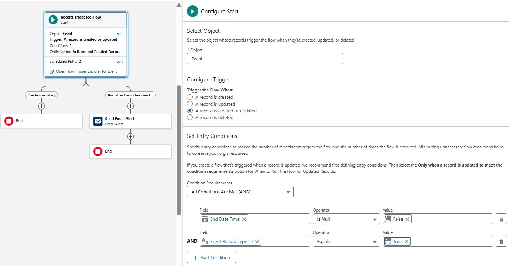

Gave leadership real-time visibility into qualifying demo bookings by replacing manual CRM monitoring with an event-triggered Salesforce Flow that routed filtered alerts to the right stakeholders.
Automation system designed to provide immediate visibility into newly booked product demos. The system removed the need for manual monitoring while ensuring that only qualified demo bookings generated stakeholder notifications.
Demo bookings were a critical operational milestone for the sales development team, yet leadership visibility relied primarily on manual dashboard checks or Slack follow-ups. This project implemented an automated alerting system that triggered notifications whenever a qualifying demo booking occurred.
